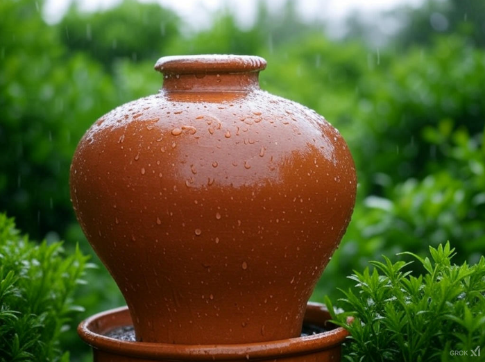

Task: Reuse water from washing fruits and vegetables to water your plants. 🌿💧
Tip: Instead of letting the water go down the drain, collect it in a bowl while you wash your fruits and vegetables. This water can then be used to keep your plants happy and hydrated! 🌱😊